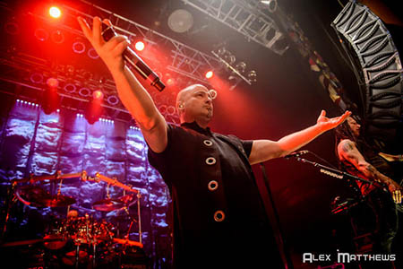
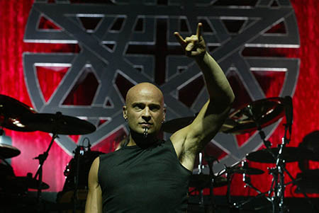
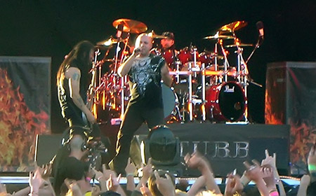

About Disturbed
Disturbed is an American rock band made up of musicians Dan Donegan, John Moyer, Mike Wengren, and vocalist David Draiman. Formed in 1996, they one of the most successful rock bands, selling over 11 million albums worldwide and releasing three #1 albums.
Disturbed wasn't always the name of the band. Before David Draiman came along and re-named them, they were known as Brawl, consisting of Dan Donegan, Mike Wengren, and Steve "Fuzz" Kmak. Draiman joined the band in 1996 and re-named the band to symbolize everything they were feeling at the time --"disturbed".
After re-naming the band, Disturbed started to record several demos and played in live shows. The band eventually signed with Giant Records. In 2000, the band released its debut album, titled The Sickness, which launched the band into stardom. The album peaked at number twenty-nine on the Billboard 200 and it has sold over four million copies in the United States since its release. The song "Down with the Sickness", a lounge cover version (by Richard Cheese) of which was used in the film Dawn of the Dead, was championed by radio station WXQR-FM (Rock 105) in North Carolina and placed into "heavy rotation" by program director Brian Rickman. The song was quickly added by radio stations such as WAAF in Boston and KROQ-FM in Los Angeles following its success. The song has since become very popular and was later used in many film soundtracks, and still is used a great deal to this day.
On September 17, 2002, Disturbed released their second studio album, titled Believe, which debuted at number-one on the Billboard 200. The music video for the first single from the album, titled "Prayer", was pulled from most television stations, due to the similarities it had with the September 11, 2001 attacks.
In early 2003, after Disturbed had finished the Music as a Weapon II tour, the band experienced the departure of Steve Kmak, who was fired for "personal differences." He was replaced by John Moyer, who is now the current bass player. On the night Moyer became the band's new bass player, Disturbed played live at the House of Blues and performed two new songs, "Hell" and "Monster", both of which became B-side tracks on the band's third studio album, Ten Thousand Fists.
A month after the release of Ten Thousand Fists, Disturbed headlined the Jägermeister Music Tour along with the band Corrosion of Conformity. Disturbed supplied the song "Stricken" for WWE's New Year's Revolution 2006. In April 2006, the band completed an Australian tour supporting Korn and sharing the tour with 10 Years and Hatebreed. In mid-2006, a European tour was scheduled but had been moved twice due to the band's frontman having troubles with his voice. In late 2006, David Draiman underwent surgery for a deviated septum which affected his voice. It was successful, and ever since then, Draiman has limited his drinking on the road. Disturbed headlined Ozzfest 2006 along with Ozzy Osbourne, System of a Down, Lacuna Coil, DragonForce, Avenged Sevenfold, and Hatebreed. The band also went on the European tour that had been previously moved twice earlier in 2006. Disturbed headlined another one of their own tours named Music as a Weapon III; the bands Flyleaf, Stone Sour, and Nonpoint toured with them.
Draiman became involved in the music file sharing controversy by publicly speaking out against the RIAA's lawsuits against file sharing individuals, despite the fact his record label is a member of the RIAA. Draiman also told NYRock: Disturbed completed the first leg of their Music as a Weapon III tour in late 2006. Soon after, Draiman stated that there was not going to be a second leg to the tour and that instead the band was going off the road to start working on their fourth studio album. In July 2007, a new track titled "This Moment" was released on the soundtrack to the film Transformers.
The band mixed their fourth studio album, titled Indestructible, in Los Angeles, California in late 2007. In an earlier interview, David Draiman said that they were going to record fifteen songs, but only twelve would be on the album. Indestructible's first single, "Inside the Fire" was made available on digital distribution services for purchase on March 25, 2008. The band also toured in the United States in April and May 2008 with the bands Five Finger Death Punch and Art of Dying. The music video for "Inside the Fire" was released on May 2, 2008 on the band's official website. Disturbed released their previously free song "Perfect Insanity" on iTunes Store as a second single on May 6, 2008, and the album Indestructible become available for pre-order for the release date on June 3, 2008.
Indestructible was released in the United States on June 3, 2008 and in Australia on June 7, 2008 and became the band's third consecutive number-one debut on the Billboard 200. A special "Internet Only" limited edition of the album that includes the B-side track "Run", a making-of DVD with instructional videos, wrap-around poster, VIP laminate, access to special Disturbed events, and a special website with exclusive video, rare audio and more was also released. The band toured in support of the "Mayhem Festival" alongside Slipknot, DragonForce, and Mastodon during summer of 2008. Disturbed also completed a tour of Australia and New Zealand through August and September 2008.
In an earlier interview, David Draiman briefly talked about the band's fifth studio album, stating that the album will be as dark as their previous album, Indestructible, if not darker. Draiman also stated that the album is "still identifiably Disturbed, but showing more maturation." Song-writing for the fifth studio album began in late 2009. In an earlier interview with Mike Wengren and John Moyer, it was stated that, judging by Draiman's feelings on the last few years of his life, that Disturbed's new album will be aggressive, angry, and "hard-hitting", but will be similar musically to their album Believe. Wengren also said that the new album may be released in the spring or summer of 2010. Additionally, Draiman has confirmed that a DVD is in the works. A countdown clock appeared on the band's website, which ended on January 12, 2010 at 5:00 p.m. EST, and a trailer for the upcoming DVD, titled Decade of Disturbed, was revealed.
On February 8, 2010, it was announced that the band had entered the studio in Chicago, Illinois to begin recording their fifth album, tentatively set for a summer 2010 release. Guitarist Dan Donegan stated that the band had written around 15 to 18 songs. It was later confirmed that the title of the album is Asylum. On Thursday, April 28, Disturbed announced that their previously unreleased bonus track from Asylum, titled "3", would be available for download on their website. They said that all proceeds made from the download of the song would go towards the Damien Echols Defense Fund, a benefit foundation supporting the release of the West Memphis Three.
In October 2011, the band went on an "Indefinite Hiatus".
On February 8, 2012, it was announced that John Moyer was supergroup Adrenaline Mob's new bass player. John made his onstage debut with the group on March 12, at New York City’s Hiro Ballroom, a day before the release of the band's debut full-length album, Omertá. On February 14, 2012, on his Twitter account David Draiman confirmed that he would make an appearance on VH1's That Metal Show 10th Season airing sometime that year. That episode was later moved to the 11th season and premiered on August 11, 2012.
On June 20, 2015, on Disturbed's Facebook page and website, there was material posted hinting at a possible return of the band. The website shows a new Disturbed logo, plus a video of the band's mascot "The Guy" appearing to be on life support, still breathing. The new Disturbed logo was also posted to their official Facebook page, along with the video of their mascot, and their profile picture changed to solid black, indicating new activity within the band. On June 22, 2015, Disturbed posted another video on Facebook, this time showing The Guy awakening from life support, as well as an 18-hour countdown on their official website, giving speculation to a definite reunion. On June 23, 2015, Disturbed officially announced the end of their hiatus and the coming of their new album entitled Immortalized. On the same day, the official music video for the new single "The Vengeful One" was released on their YouTube channel. Immortalized was released on August 21, 2015. For currently unknown reasons, John Moyer did not perform on the album, with all bass tracks being performed by Dan Donegan. Moyer is not in the band's video for "The Sound Of Silence" released in December 2015. However, Moyer remains a band member, having appeared in promotional photography for the album as well as continuing to perform live with the band.